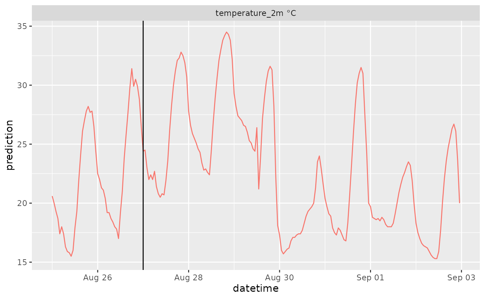
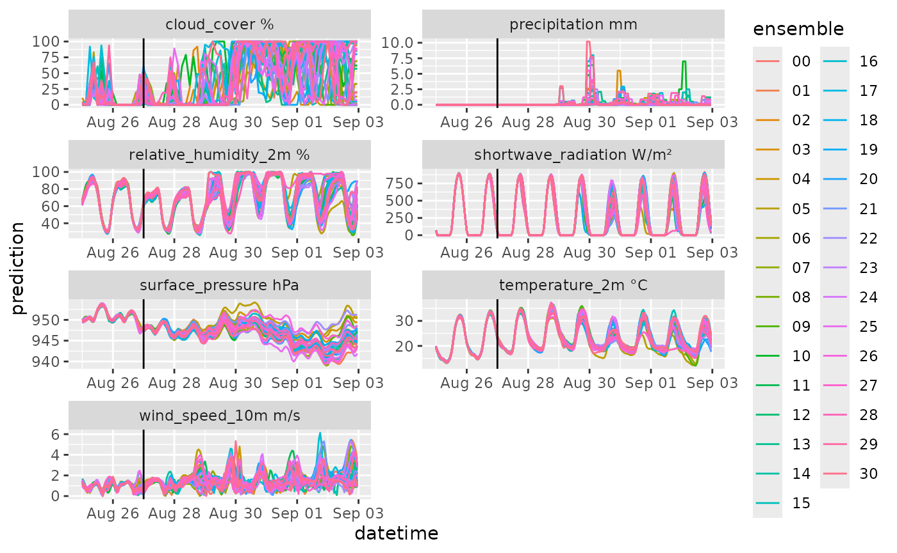
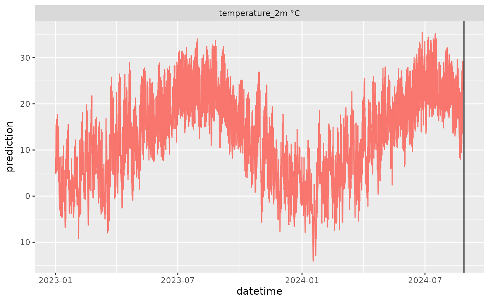
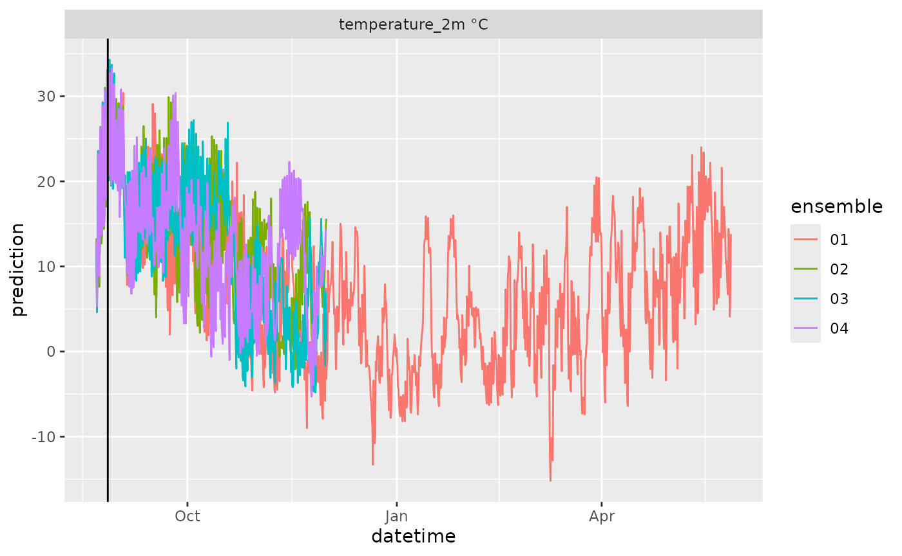
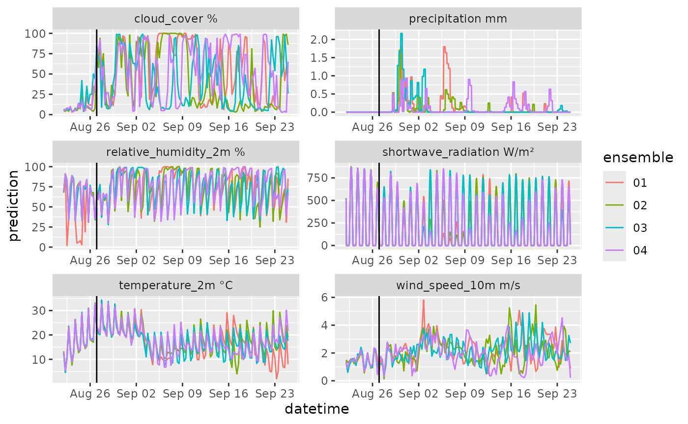
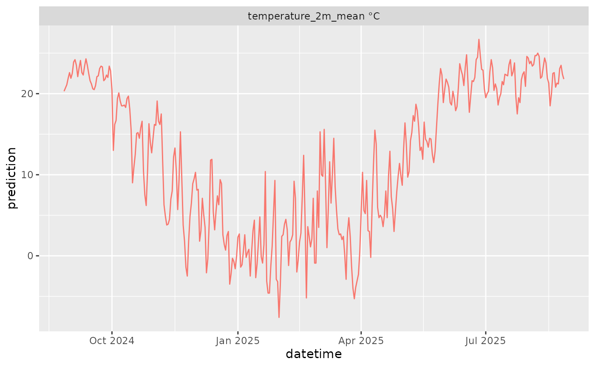
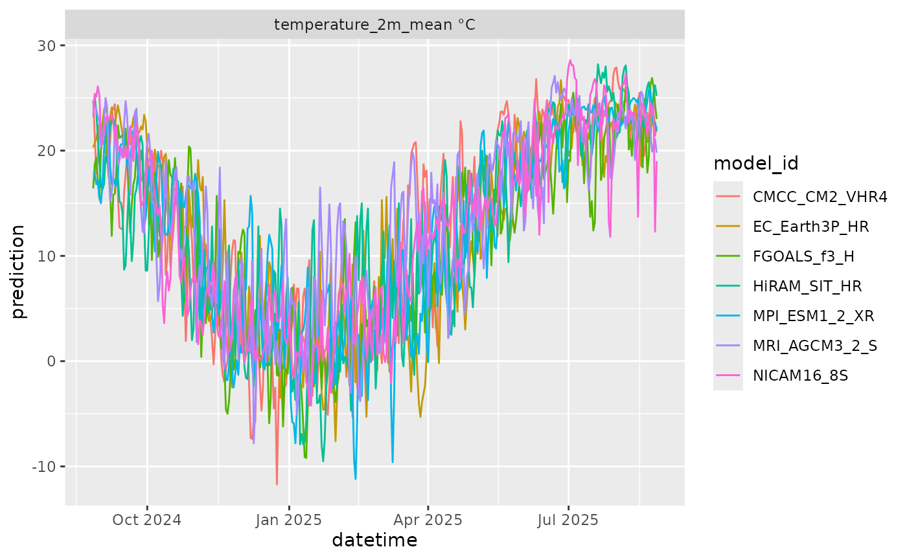
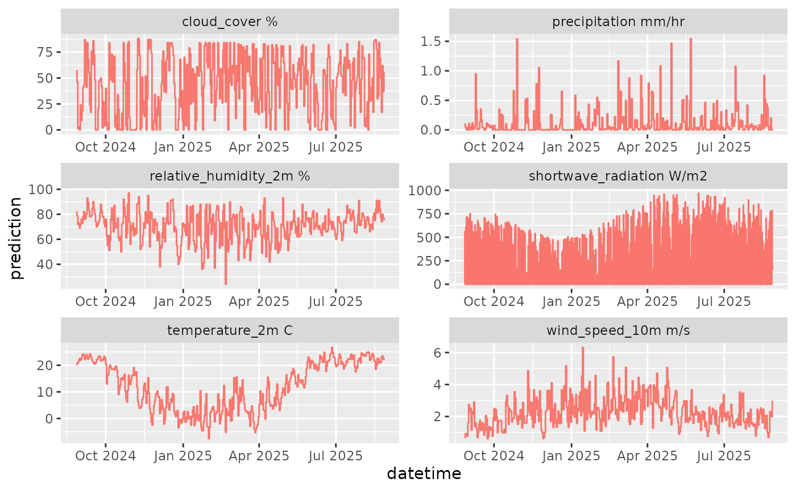

library(ggplot2)
library(dplyr)
library(purrr)
library(tibble)
library(RopenMeteo)
library(lubridate)
library(readr)Weather forecasts
The open-meteo project combines the the best models for each location
across the globe to provide the best possible forecast. open-meteo
defines this as model = "generic".
[https://open-meteo.com/en/docs]
df <- get_forecast(latitude = 37.30,
longitude = -79.83,
forecast_days = 7,
past_days = 2,
model = "generic",
variables = c("temperature_2m"))
head(df)
#> # A tibble: 6 × 7
#> datetime reference_datetime site_id model_id variable prediction
#> <dttm> <dttm> <chr> <chr> <chr> <dbl>
#> 1 2024-08-20 00:00:00 2024-08-22 00:00:00 37.3_-79… generic tempera… 21.7
#> 2 2024-08-20 01:00:00 2024-08-22 00:00:00 37.3_-79… generic tempera… 20.6
#> 3 2024-08-20 02:00:00 2024-08-22 00:00:00 37.3_-79… generic tempera… 19.7
#> 4 2024-08-20 03:00:00 2024-08-22 00:00:00 37.3_-79… generic tempera… 18.8
#> 5 2024-08-20 04:00:00 2024-08-22 00:00:00 37.3_-79… generic tempera… 18.6
#> 6 2024-08-20 05:00:00 2024-08-22 00:00:00 37.3_-79… generic tempera… 17.9
#> # ℹ 1 more variable: unit <chr>
df |>
mutate(variable = paste(variable, unit)) |>
ggplot(aes(x = datetime, y = prediction)) +
geom_line(color = "#F8766D") +
geom_vline(aes(xintercept = reference_datetime)) +
facet_wrap(~variable, scale = "free")
Ensemble Weather Forecasts
Ensemble forecasts from individual models are available.
[https://open-meteo.com/en/docs/ensemble-api]
df <- get_ensemble_forecast(
latitude = 37.30,
longitude = -79.83,
forecast_days = 7,
past_days = 2,
model = "gfs_seamless",
variables = c("temperature_2m"))
head(df)
df |>
mutate(variable = paste(variable, unit)) |>
ggplot(aes(x = datetime, y = prediction, color = ensemble)) +
geom_line() +
geom_vline(aes(xintercept = reference_datetime)) +
facet_wrap(~variable, scale = "free", ncol = 2)Options for models and variables are at https://open-meteo.com/en/docs/ensemble-api
Note that ecmwf_ifs04 does not include solar
radiation.
List of global model ids:
icon_seamless, icon_global, gfs_seamless, gfs025, gfs05, ecmwf_ifs04, gem_globalUse with the General Lake Model
We have included functions that allow the output to be used with the General Lake Model ([https://doi.org/10.5194/gmd-12-473-2019]). Since the open-meteo models do not include longwave radiation, the package provides a function to calculate it from the cloud cover and air temperature.
GLM requires a set of variables that are provided
df <- get_ensemble_forecast(
latitude = 37.30,
longitude = -79.83,
forecast_days = 7,
past_days = 2,
model = "gfs_seamless",
variables = RopenMeteo::glm_variables(product = "ensemble_forecast",
time_step = "hourly"))
head(df)
#> # A tibble: 6 × 8
#> datetime reference_datetime site_id model_id ensemble variable
#> <dttm> <dttm> <chr> <chr> <chr> <chr>
#> 1 2024-08-20 00:00:00 2024-08-22 00:00:00 37.3_-79.83 gfs_sea… 00 relativ…
#> 2 2024-08-20 00:00:00 2024-08-22 00:00:00 37.3_-79.83 gfs_sea… 01 relativ…
#> 3 2024-08-20 00:00:00 2024-08-22 00:00:00 37.3_-79.83 gfs_sea… 02 relativ…
#> 4 2024-08-20 00:00:00 2024-08-22 00:00:00 37.3_-79.83 gfs_sea… 03 relativ…
#> 5 2024-08-20 00:00:00 2024-08-22 00:00:00 37.3_-79.83 gfs_sea… 04 relativ…
#> 6 2024-08-20 00:00:00 2024-08-22 00:00:00 37.3_-79.83 gfs_sea… 05 relativ…
#> # ℹ 2 more variables: prediction <dbl>, unit <chr>
df |>
mutate(variable = paste(variable, unit)) |>
ggplot(aes(x = datetime, y = prediction, color = ensemble)) +
geom_line() +
geom_vline(aes(xintercept = reference_datetime)) +
facet_wrap(~variable, scale = "free", ncol = 2)
The following converts to GLM format
path <- tempdir()
df |>
add_longwave() |>
write_glm_format(path = path)
head(read_csv(list.files(path = path, full.names = TRUE, pattern = ".csv")[1]))
#> Rows: 216 Columns: 7
#> ── Column specification ────────────────────────────────────────────────────────
#> Delimiter: ","
#> dbl (6): AirTemp, ShortWave, LongWave, RelHum, WindSpeed, Rain
#> dttm (1): time
#>
#> ℹ Use `spec()` to retrieve the full column specification for this data.
#> ℹ Specify the column types or set `show_col_types = FALSE` to quiet this message.
#> # A tibble: 6 × 7
#> time AirTemp ShortWave LongWave RelHum WindSpeed Rain
#> <dttm> <dbl> <dbl> <dbl> <dbl> <dbl> <dbl>
#> 1 2024-08-20 00:00:00 19.5 0 317. 70 3.55 0
#> 2 2024-08-20 01:00:00 18.1 0 307. 76 3.11 0
#> 3 2024-08-20 02:00:00 16.8 0 300. 81 2.76 0
#> 4 2024-08-20 03:00:00 15.7 0 294. 86 2.48 0
#> 5 2024-08-20 04:00:00 14.7 0 290. 89 2.27 0
#> 6 2024-08-20 05:00:00 13.9 0 285. 90 2.2 0Converting to Ecological Forecasting Initative convention
The standard used in the NEON Ecological Forecasting Challenge is
slightly different from the standard in this package. It uses the column
parameter for ensemble because the Challenge standard
allows the flexibility to use parametric distributions (i.e., normal
distribution mean and sd) in the same standard
as a ensemble (or sample) forecast. The family column
defines the distribution (here family =
ensemble).
The EFI standard also follows CF-conventions so the variable names are converted to be CF compliant.
The output from RopenMeteo::convert_to_efi_standard() is
the same as the output from neon4cast::stage2()
Learn more about neon4cast::stage2() here: [https://projects.ecoforecast.org/neon4cast-docs/Shared-Forecast-Drivers.html]
df |>
add_longwave() |>
convert_to_efi_standard()
#> # A tibble: 53,568 × 8
#> datetime reference_datetime site_id model_id family parameter
#> <dttm> <dttm> <chr> <chr> <chr> <chr>
#> 1 2024-08-20 00:00:00 2024-08-22 00:00:00 37.3_-79.83 gfs_sea… ensem… 00
#> 2 2024-08-20 00:00:00 2024-08-22 00:00:00 37.3_-79.83 gfs_sea… ensem… 00
#> 3 2024-08-20 00:00:00 2024-08-22 00:00:00 37.3_-79.83 gfs_sea… ensem… 00
#> 4 2024-08-20 00:00:00 2024-08-22 00:00:00 37.3_-79.83 gfs_sea… ensem… 00
#> 5 2024-08-20 00:00:00 2024-08-22 00:00:00 37.3_-79.83 gfs_sea… ensem… 00
#> 6 2024-08-20 00:00:00 2024-08-22 00:00:00 37.3_-79.83 gfs_sea… ensem… 00
#> 7 2024-08-20 00:00:00 2024-08-22 00:00:00 37.3_-79.83 gfs_sea… ensem… 00
#> 8 2024-08-20 00:00:00 2024-08-22 00:00:00 37.3_-79.83 gfs_sea… ensem… 00
#> 9 2024-08-20 00:00:00 2024-08-22 00:00:00 37.3_-79.83 gfs_sea… ensem… 01
#> 10 2024-08-20 00:00:00 2024-08-22 00:00:00 37.3_-79.83 gfs_sea… ensem… 01
#> # ℹ 53,558 more rows
#> # ℹ 2 more variables: variable <chr>, prediction <dbl>Note that neon4cast::stage3() is similar to
df |>
add_longwave() |>
convert_to_efi_standard() |>
filter(datetime < reference_datetime)
#> # A tibble: 11,904 × 8
#> datetime reference_datetime site_id model_id family parameter
#> <dttm> <dttm> <chr> <chr> <chr> <chr>
#> 1 2024-08-20 00:00:00 2024-08-22 00:00:00 37.3_-79.83 gfs_sea… ensem… 00
#> 2 2024-08-20 00:00:00 2024-08-22 00:00:00 37.3_-79.83 gfs_sea… ensem… 00
#> 3 2024-08-20 00:00:00 2024-08-22 00:00:00 37.3_-79.83 gfs_sea… ensem… 00
#> 4 2024-08-20 00:00:00 2024-08-22 00:00:00 37.3_-79.83 gfs_sea… ensem… 00
#> 5 2024-08-20 00:00:00 2024-08-22 00:00:00 37.3_-79.83 gfs_sea… ensem… 00
#> 6 2024-08-20 00:00:00 2024-08-22 00:00:00 37.3_-79.83 gfs_sea… ensem… 00
#> 7 2024-08-20 00:00:00 2024-08-22 00:00:00 37.3_-79.83 gfs_sea… ensem… 00
#> 8 2024-08-20 00:00:00 2024-08-22 00:00:00 37.3_-79.83 gfs_sea… ensem… 00
#> 9 2024-08-20 00:00:00 2024-08-22 00:00:00 37.3_-79.83 gfs_sea… ensem… 01
#> 10 2024-08-20 00:00:00 2024-08-22 00:00:00 37.3_-79.83 gfs_sea… ensem… 01
#> # ℹ 11,894 more rows
#> # ℹ 2 more variables: variable <chr>, prediction <dbl>With the only difference that the number of days is equal to the
past_days in the call to
RopenMeteo::get_ensemble_forecast(). The max
past_days from open-meteo is ~60 days.
Historical Weather
If you need more historical days for model calibration and testing, historical data are available through open-meteo’s historical weather API.
[https://open-meteo.com/en/docs/historical-weather-api]
df <- get_historical_weather(
latitude = 37.30,
longitude = -79.83,
start_date = "2023-01-01",
end_date = Sys.Date(),
variables = c("temperature_2m"))
tail(df |> na.omit())
#> # A tibble: 6 × 6
#> datetime site_id model_id variable prediction unit
#> <dttm> <chr> <chr> <chr> <dbl> <chr>
#> 1 2024-08-19 19:00:00 37.3_-79.83 ERA5 temperature_2m 25 °C
#> 2 2024-08-19 20:00:00 37.3_-79.83 ERA5 temperature_2m 24.3 °C
#> 3 2024-08-19 21:00:00 37.3_-79.83 ERA5 temperature_2m 24.7 °C
#> 4 2024-08-19 22:00:00 37.3_-79.83 ERA5 temperature_2m 23.3 °C
#> 5 2024-08-19 23:00:00 37.3_-79.83 ERA5 temperature_2m 22.8 °C
#> 6 2024-08-20 00:00:00 37.3_-79.83 ERA5 temperature_2m 21.2 °CNotice the delay of ~7 days.
df |>
mutate(variable = paste(variable, unit)) |>
ggplot(aes(x = datetime, y = prediction)) +
geom_line(color = "#F8766D") +
geom_vline(aes(xintercept = lubridate::with_tz(Sys.time(), tzone = "UTC"))) +
facet_wrap(~variable, scale = "free")
#> Warning: Removed 71 rows containing missing values or values outside the scale range
#> (`geom_line()`).
Seasonal Forecasts
Weather forecasts for up to 9 months in the future are available from the NOAA Climate Forecasting System
[https://open-meteo.com/en/docs/seasonal-forecast-api]
df <- get_seasonal_forecast(
latitude = 37.30,
longitude = -79.83,
forecast_days = 274,
past_days = 5,
variables = c("temperature_2m"))
head(df)
#> # A tibble: 6 × 8
#> datetime reference_datetime site_id model_id ensemble variable
#> <dttm> <dttm> <chr> <chr> <chr> <chr>
#> 1 2024-08-17 00:00:00 2024-08-22 00:00:00 37.3_-79.83 cfs 01 tempera…
#> 2 2024-08-17 00:00:00 2024-08-22 00:00:00 37.3_-79.83 cfs 02 tempera…
#> 3 2024-08-17 00:00:00 2024-08-22 00:00:00 37.3_-79.83 cfs 03 tempera…
#> 4 2024-08-17 00:00:00 2024-08-22 00:00:00 37.3_-79.83 cfs 04 tempera…
#> 5 2024-08-17 06:00:00 2024-08-22 00:00:00 37.3_-79.83 cfs 01 tempera…
#> 6 2024-08-17 06:00:00 2024-08-22 00:00:00 37.3_-79.83 cfs 02 tempera…
#> # ℹ 2 more variables: prediction <dbl>, unit <chr>
df |>
mutate(variable = paste(variable, unit)) |>
ggplot(aes(x = datetime, y = prediction, color = ensemble)) +
geom_line() +
geom_vline(aes(xintercept = reference_datetime)) +
facet_wrap(~variable, scale = "free")
#> Warning: Removed 2073 rows containing missing values or values outside the scale range
#> (`geom_line()`).
Downscaling from 6 hour to 1 hour time-step
The downscaling uses the GLM variables
df <- get_seasonal_forecast(
latitude = 37.30,
longitude = -79.83,
forecast_days = 30,
past_days = 5,
variables = glm_variables(product = "seasonal_forecast",
time_step = "6hourly"))
#> Waiting 5s for throttling delay ■■■■■■
#> Waiting 5s for throttling delay ■■■■■■■■■■■■■■■■■■■■
#> Waiting 5s for throttling delay ■■■■■■■■■■■■■■■■■■■■■■■■■■■■■■■
df |>
six_hourly_to_hourly(latitude = 37.30, longitude = -79.83, use_solar_geom = TRUE) |>
mutate(variable = paste(variable, unit)) |>
ggplot(aes(x = datetime, y = prediction, color = ensemble)) +
geom_line() +
geom_vline(aes(xintercept = reference_datetime)) +
facet_wrap(~variable, scale = "free", ncol = 2)
#> Registered S3 method overwritten by 'quantmod':
#> method from
#> as.zoo.data.frame zoo
Climate Projections
Climate projections from different models are available through 2050. The output is a daily time-step.
Note the units for shortwave radiation are different for the climate projection.
[https://open-meteo.com/en/docs/climate-api]
df <- get_climate_projections(
latitude = 37.30,
longitude = -79.83,
start_date = Sys.Date(),
end_date = Sys.Date() + lubridate::years(1),
model = "EC_Earth3P_HR",
variables = c("temperature_2m_mean"))
head(df)
#> # A tibble: 6 × 6
#> datetime site_id model_id variable prediction unit
#> <date> <chr> <chr> <chr> <dbl> <chr>
#> 1 2024-08-22 37.3_-79.83 EC_Earth3P_HR temperature_2m_mean 21.7 °C
#> 2 2024-08-23 37.3_-79.83 EC_Earth3P_HR temperature_2m_mean 22.3 °C
#> 3 2024-08-24 37.3_-79.83 EC_Earth3P_HR temperature_2m_mean 21.9 °C
#> 4 2024-08-25 37.3_-79.83 EC_Earth3P_HR temperature_2m_mean 20.6 °C
#> 5 2024-08-26 37.3_-79.83 EC_Earth3P_HR temperature_2m_mean 19.5 °C
#> 6 2024-08-27 37.3_-79.83 EC_Earth3P_HR temperature_2m_mean 20.3 °C
df |>
mutate(variable = paste(variable, unit)) |>
ggplot(aes(x = datetime, y = prediction)) +
geom_line(color = "#F8766D") +
facet_wrap(~variable, scale = "free")
Downloading multiple sites or models
Multiple models
models <- c("CMCC_CM2_VHR4","FGOALS_f3_H","HiRAM_SIT_HR","MRI_AGCM3_2_S","EC_Earth3P_HR","MPI_ESM1_2_XR","NICAM16_8S")
df <- map_df(models, function(model){
get_climate_projections(
latitude = 37.30,
longitude = -79.83,
start_date = Sys.Date(),
end_date = Sys.Date() + lubridate::years(1),
model = model,
variables = c("temperature_2m_mean"))
})
#> Waiting 5s for throttling delay ■■■■■■
#> Waiting 5s for throttling delay ■■■■■■■■■■■■■
#> Waiting 5s for throttling delay ■■■■■■■■■■■■■■■■■■■■■■■■■■■■■■■
#> Waiting 6s for throttling delay ■■■■■■
#> Waiting 6s for throttling delay ■■■■■■■■■■■■■■■■
#> Waiting 6s for throttling delay ■■■■■■■■■■■■■■■■■■■■■■■■■■■■■■
#> Waiting 6s for throttling delay ■■■■■■■■■■■■■■■■■■■■■■■■■■■■■■■
#> Waiting 5s for throttling delay ■■■■■■■■■■■■■■■■■
#> Waiting 5s for throttling delay ■■■■■■■■■■■■■■■■■■■■■■■■■■■■■■■
#> Waiting 6s for throttling delay ■■■■■■
#> Waiting 6s for throttling delay ■■■■■■■■■■■■■■■■■■■
#> Waiting 6s for throttling delay ■■■■■■■■■■■■■■■■■■■■■■■■■■■■■■■
#> Waiting 6s for throttling delay ■■■■■■
#> Waiting 6s for throttling delay ■■■■■■■■■■■■■■■■■■
#> Waiting 6s for throttling delay ■■■■■■■■■■■■■■■■■■■■■■■■■■■■■■■
#> Waiting 6s for throttling delay ■■■■■■
#> Waiting 6s for throttling delay ■■■■■■■■■■■■■■■■■
#> Waiting 6s for throttling delay ■■■■■■■■■■■■■■■■■■■■■■■■■■■■■■■
#> Waiting 6s for throttling delay ■■■■■■
#> Waiting 6s for throttling delay ■■■■■■■■■■■■■■■■
#> Waiting 6s for throttling delay ■■■■■■■■■■■■■■■■■■■■■■■■■■■■■■■
df |>
mutate(variable = paste(variable, unit)) |>
ggplot(aes(x = datetime, y = prediction, color = model_id)) +
geom_line() +
facet_wrap(~variable, scale = "free")
Multiple sites
The download of multiple sites uses the optional site_id
to add column that denotes the different sites.
sites <- tibble(site_id = c("fcre", "sunp"),
latitude = c(37.30, 43.39),
longitude = c(-79.83, -72.05))
df <- map_df(1:nrow(sites), function(i, sites){
get_climate_projections(
latitude = sites$latitude[i],
longitude = sites$longitude[i],
site_id = sites$site_id[i],
start_date = Sys.Date(),
end_date = Sys.Date() + lubridate::years(1),
model = "MPI_ESM1_2_XR",
variables = c("temperature_2m_mean"))
},
sites)
#> Waiting 5s for throttling delay ■■■■■■
#> Waiting 5s for throttling delay ■■■■■■■■■■■■■■■
#> Waiting 5s for throttling delay ■■■■■■■■■■■■■■■■■■■■■■■■■■■■■■■
#> Waiting 6s for throttling delay ■■■■■■
#> Waiting 6s for throttling delay ■■■■■■■■■■■■■■■■■
#> Waiting 6s for throttling delay ■■■■■■■■■■■■■■■■■■■■■■■■■■■■■■■
head(df)
#> # A tibble: 6 × 6
#> datetime site_id model_id variable prediction unit
#> <date> <chr> <chr> <chr> <dbl> <chr>
#> 1 2024-08-22 fcre MPI_ESM1_2_XR temperature_2m_mean 21.6 °C
#> 2 2024-08-23 fcre MPI_ESM1_2_XR temperature_2m_mean 20.7 °C
#> 3 2024-08-24 fcre MPI_ESM1_2_XR temperature_2m_mean 21.3 °C
#> 4 2024-08-25 fcre MPI_ESM1_2_XR temperature_2m_mean 18.9 °C
#> 5 2024-08-26 fcre MPI_ESM1_2_XR temperature_2m_mean 17.6 °C
#> 6 2024-08-27 fcre MPI_ESM1_2_XR temperature_2m_mean 17.9 °CConverting from daily to hourly time-step
Photosynthesis is non-linearly sensitive to shortwave radiation. Therefore, the photosynthesis response to hourly radiation is different than the response to the aggregated daily mean radiation. To address this issue, we provide a function to convert the daily sum of shortwave radiation to hourly values that uses solar geometry to impute. Additionally, the sum of precipitation is divided by 24 hours to convert to an hourly time-step. All other variables have their daily mean applied to each hour.
df <- get_climate_projections(
latitude = 37.30,
longitude = -79.83,
start_date = Sys.Date(),
end_date = Sys.Date() + lubridate::years(1),
model = "EC_Earth3P_HR",
variables = glm_variables(product = "climate_projection", time_step = "daily"))
#> Waiting 5s for throttling delay ■■■■■■
#> Waiting 5s for throttling delay ■■■■■■■■■■■■■■■■■
#> Waiting 5s for throttling delay ■■■■■■■■■■■■■■■■■■■■■■■■■■■■■■■
#> Waiting 6s for throttling delay ■■■■■■
#> Waiting 6s for throttling delay ■■■■■■■■■■■■■■■■■■■
#> Waiting 6s for throttling delay ■■■■■■■■■■■■■■■■■■■■■■■■■■■■■■■
#> Waiting 6s for throttling delay ■■■■■■
#> Waiting 6s for throttling delay ■■■■■■■■■■■■■■■■■■
#> Waiting 6s for throttling delay ■■■■■■■■■■■■■■■■■■■■■■■■■■■■■■■
#> Waiting 6s for throttling delay ■■■■■■
#> Waiting 6s for throttling delay ■■■■■■■■■■■■■■■■■
#> Waiting 6s for throttling delay ■■■■■■■■■■■■■■■■■■■■■■■■■■■■■■■
#> Waiting 6s for throttling delay ■■■■■■
#> Waiting 6s for throttling delay ■■■■■■■■■■■■■■■■■
#> Waiting 6s for throttling delay ■■■■■■■■■■■■■■■■■■■■■■■■■■■■■■■
#> Waiting 6s for throttling delay ■■■■■■
#> Waiting 6s for throttling delay ■■■■■■■■■■■■■■■■
#> Waiting 6s for throttling delay ■■■■■■■■■■■■■■■■■■■■■■■■■■■■■■■
df |>
daily_to_hourly(latitude = 37.30, longitude = -79.83) |>
mutate(variable = paste(variable, unit)) |>
ggplot(aes(x = datetime, y = prediction)) +
geom_line(color = "#F8766D") +
facet_wrap(~variable, scale = "free", ncol = 2)